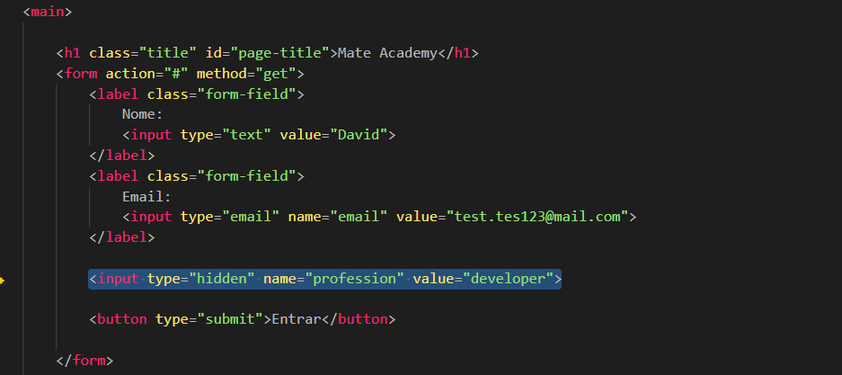

Hidden Field
Intro
Aqui iremos ver sobre campos ocultos em formularios.
Aqui iremos ver sobre campos ocultos em formularios.
HTML:

Os campos ocultos sao utilizados quando precisamos enviar determinadas informacoes para o servidor, mas nao queremos que o usuario visualize ou altere esses dados diretamente no formulario.
Um exemplo seria quando um usuario acessa uma pagina atraves de uma determinada URL e algumas informacoes ja foram identificadas automaticamente pelo sistema. Nesse caso, podemos utilizar um campo oculto para enviar esses dados junto ao formulario.
Utilizando o type="hidden", conseguimos criar um campo invisivel para o usuario, mas que ainda sera enviado normalmente para o servidor quando o formulario for submetido.
Esse tipo de campo tambem pode ser utilizado em formularios com varias etapas, onde precisamos armazenar temporariamente algumas informacoes sem exibi-las ao usuario ate a finalizacao completa do processo.
Apesar de o campo ser oculto visualmente, o usuario ainda pode visualizar ou alterar esses dados utilizando as ferramentas do navegador. Por isso, informacoes importantes ou sensiveis sempre devem ser validadas no servidor.
Conteudo da aula